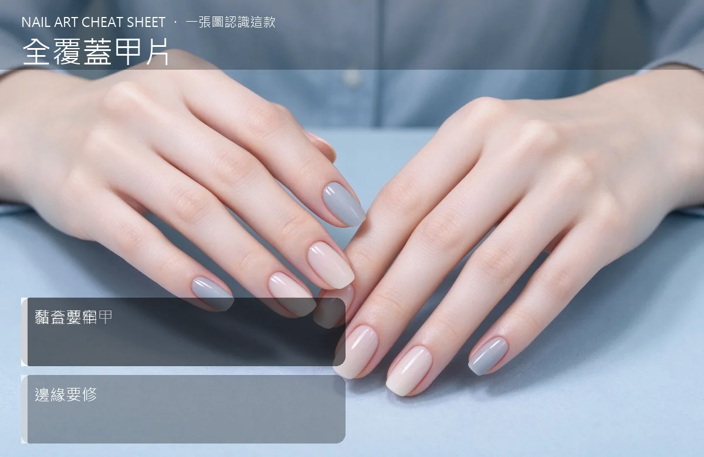

美甲全覆蓋甲片是什麼？入門入門攻略
10 分鐘完成一副完美長甲——這就是全覆蓋甲片的魅力。
全覆蓋甲片原理與辨識重點：美甲師不說的覆蓋整個甲
它就是一整個「假指甲模型」，已經做好形狀（方、圓、尖都有）。你只要選對尺寸、塊膠水或凝膠黏上去、壓緊，再上一層色膠或封層就完成。跟自己用紙模慢慢塑比起來，快非常多，新手也能上手。
誰適合做全覆蓋甲片？快速延長對號入座
想快速擁有長甲、技術還在練的新手；或沙龍要應付大量客人的快速方案。
全覆蓋甲片美甲施作步驟：全覆蓋甲片
真甲磨短、輕磨甲面 → 比對尺寸選最合的甲片 → 塊專用膠或凝膠底 → 對準甲根壓上去、壓個 10 秒 → 擦去擠出的膠 → 修一下邊 → 上色封層。
全覆蓋甲片優缺點分析：美甲持久度與傷甲評估
| 優點 | 說明 |
|---|---|
| 速度快、價格低、甲型一致；新手也能做出整齊的一整手。 | 是通用流派的招牌，入門就能上手 |
| 缺點 | 說明 |
| 接痕比較明顯、久了兩側容易翹；真甲被整個蓋住，透氣性較差。 | 前置與最怕尺寸選錯——太大會頂到兩旁皮膚、太小會翹邊。貼之前十根都要比對過。也別連續戴超過兩週不取下，真甲會喘不過氣。沒顧好會打折 |

全覆蓋甲片新手雷區：黏合要牢與常見錯誤
注意：最怕尺寸選錯——太大會頂到兩旁皮膚、太小會翹邊。貼之前十根都要比對過。也別連續戴超過兩週不取下，真甲會喘不過氣。
全覆蓋甲片和其他美甲做法的差別比較
跟「半甲片」不同：全覆蓋是整片蓋住本甲；半甲片只蓋前端一半，要自己再延，後者技術門檻高。
全覆蓋甲片美甲常見問題 FAQ
Q：全覆蓋甲片傷甲嗎？ A：正確貼、正確卸（用解膠液或磨掉）不傷；怕的是硬拔，那會把甲面一起掀起來。
Q：可以戴著洗澡嗎？ A：短時間可以，別泡溫泉、別用開水燙；膠遇熱會軟化，很快就翹。